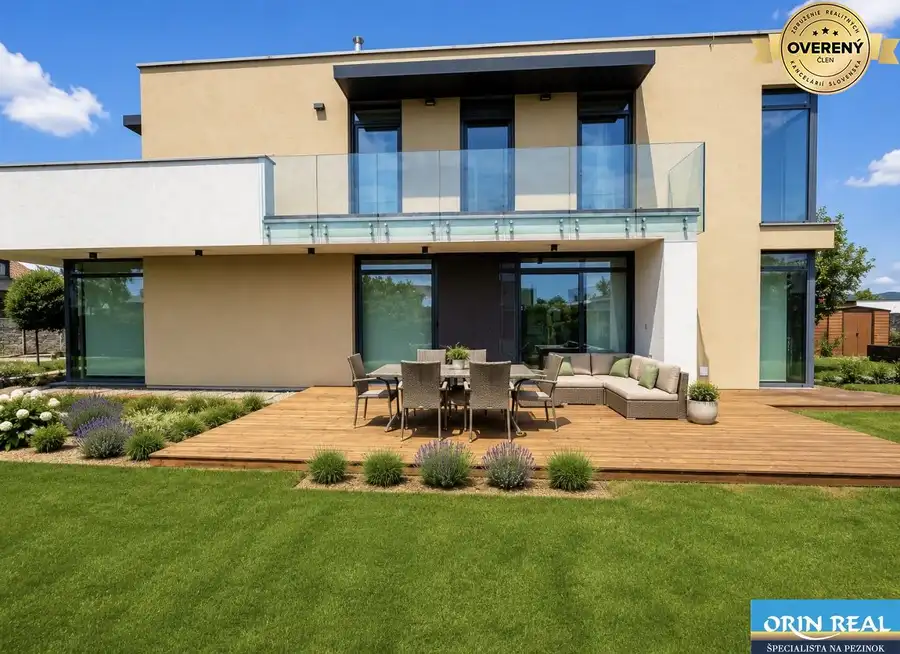
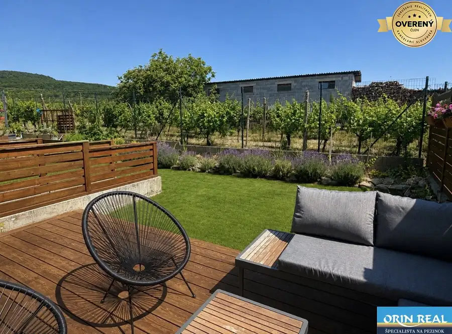
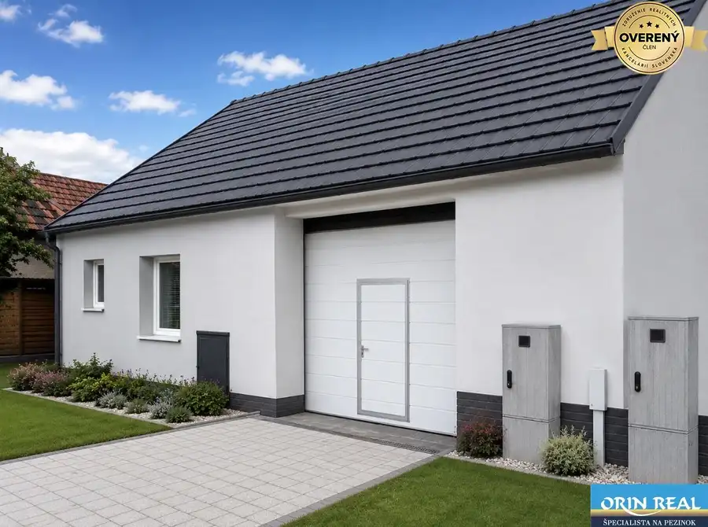
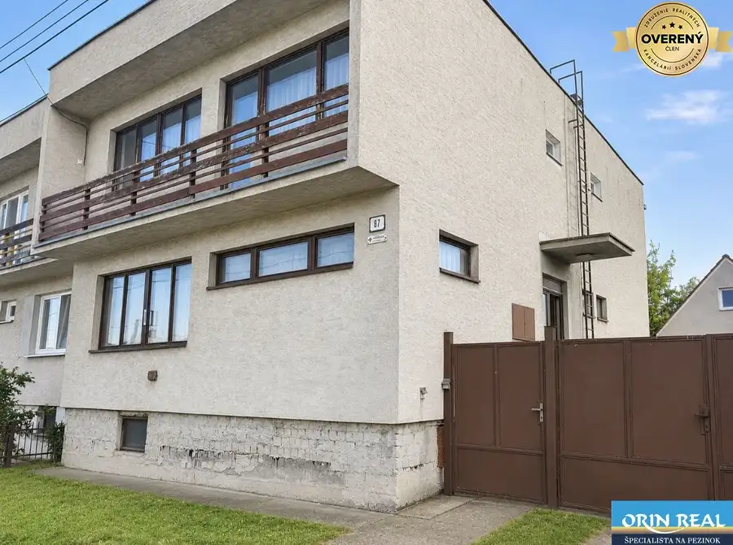
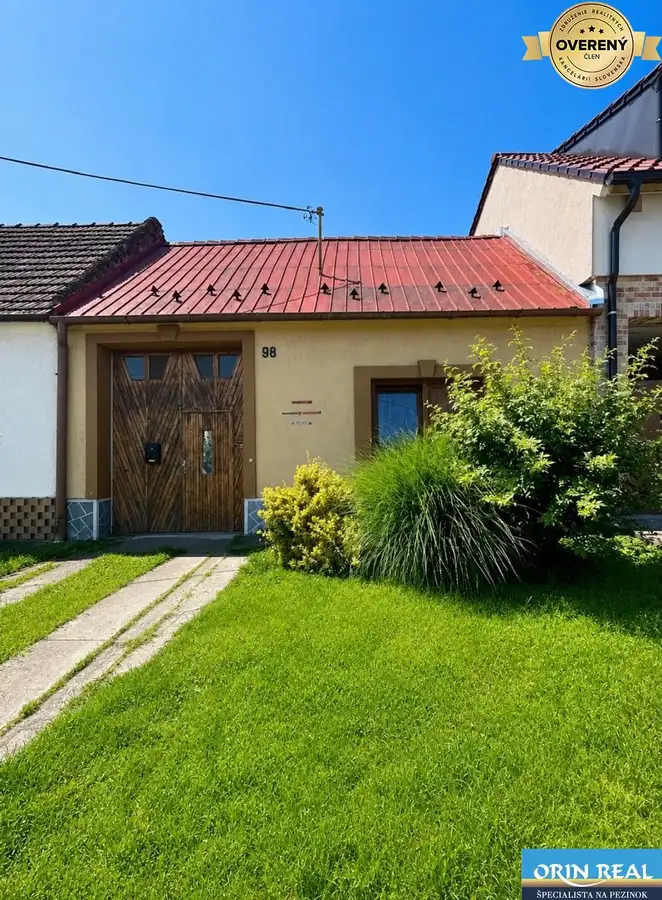

Aktuálna ponuka
10 nehnuteľností, predovšetkým rodinné domy, pozemky, byty. Každá má vlastnú stránku s fotkami, popisom a mapou.
Prezrieť ponuku
Katarína ČervenkováRealitná maklérka
Realitná maklérka · ORIN REAL s.r.o.
Predaj a prenájom nehnuteľností · Chorvátsky Grob, Slovenský Grob, Pezinok

 Pozemok9
249 000 €Pozemok vhodný na veľký RD Chorvátsky Grob 1.044m2
Chorvátsky Grob
1044 m²
Licencovaná realitná kancelária Orin real Vám ponúka na predaj skvelý veľký stavebný pozemok v starej časti obce Chorvátsky Grob na konci slepej…
Pozemok4
144 000 €Stavebný pozemok na RD Slovenský Grob - Orechová 631m2
Slovenský Grob
631 m²
Licencovaná realitná kancelária Orin real Vám ponúka na predaj stavebný pozemok určný na bývanie a výstavbu rodinných domov v Slovenskom Grobe len…
Nebytové priestory10
1 200 €Na prenájom obchodný priestor v centre Pezinka 100m2
Pezinok
100 m²
Licencovaná realitná kancelária Orin real Vám ponúka na prenájom kompletne zrekonštruovaný obchodný priestor v tichej časti centra mesta Pezinok na…
Pozemok9
249 000 €Pozemok vhodný na veľký RD Chorvátsky Grob 1.044m2
Chorvátsky Grob
1044 m²
Licencovaná realitná kancelária Orin real Vám ponúka na predaj skvelý veľký stavebný pozemok v starej časti obce Chorvátsky Grob na konci slepej…
Pozemok4
144 000 €Stavebný pozemok na RD Slovenský Grob - Orechová 631m2
Slovenský Grob
631 m²
Licencovaná realitná kancelária Orin real Vám ponúka na predaj stavebný pozemok určný na bývanie a výstavbu rodinných domov v Slovenskom Grobe len…
Nebytové priestory10
1 200 €Na prenájom obchodný priestor v centre Pezinka 100m2
Pezinok
100 m²
Licencovaná realitná kancelária Orin real Vám ponúka na prenájom kompletne zrekonštruovaný obchodný priestor v tichej časti centra mesta Pezinok na…

Rodinné domy10 790 000 €Jedinečný moderný Rodinný dom Čierna Voda-Chorvátsky Grob 887m2 Chorvátsky Grob 5-izbový270 m² Licencovaná realitná kancelária Orin real Vám ponúka tento krásny luxusný a jedinečný rodinný dom v Chorvátskom Grobe v časti Čierna Voda Panónsky…
Rodinné domy10 377 000 €Nádherný 4izbový dom Novostavba v obci Dubová 196m2 - pivnica Dubová 4-izbový196 m² Licencovaná realitná kancelária Orin real Vám ponúka nádherný priestranný rodinný dom nízkonákladová Novostavba v obci Dubová v okrese Pezinok. Tento…
Rodinné domy10 210 000 €Častá RD s čiastočnou rekonštrukciou a veľkým pozemkom 2934m2 Častá 4-izbový235 m² Licencovaná realitná kancelária Orin real Vám ponúka na predaj čiastočne zrekonštruovaný starší rodinný dom s obrovským potenciálom priamo v centre… Rodinné domy10
460 000 €ZĽAVA!!!Na predaj rodinný dom s rozľahlým pozemkom 1788m2 MODRA
Modra
4-izbový110 m²
Licencovaná realitná kancelária Orin real Vám ponúka na predaj jedinečnú investičnú nehnuteľnosť rodinného domu v Modre v príjemnej lokalite…
Rodinné domy10
460 000 €ZĽAVA!!!Na predaj rodinný dom s rozľahlým pozemkom 1788m2 MODRA
Modra
4-izbový110 m²
Licencovaná realitná kancelária Orin real Vám ponúka na predaj jedinečnú investičnú nehnuteľnosť rodinného domu v Modre v príjemnej lokalite…

Rodinné domy10 180 000 €Priestranný 5izbový RD v Dolných Orešanoch 733m2 Dolné Orešany 5-izbový200 m² Rodinný dom je zdravá kvalitná stavba - stavaný z tehly, dvojpodlažný, kolaudovaný v roku 1987, podpivničený 35m2(tri miestnosti). Je to súčasť…
Rodinné domy10 160 000 €Na predaj starší rodinný dom v obci Budmerice 541m2 Budmerice 6-izbový200 m² Dom sa nachádza na ulici Juraja Holčeka, je členitý dlhý na užšom pozemku rozdelenom v prednej časti na zastavanú obytnú časť a v zadnej časti na…Tomuto výberu zatiaľ nezodpovedá žiadna ponuka. Napíšte mi, čo hľadáte.
Volám sa Katarína Červenková. Som realitná maklérka kancelárie ORIN REAL s.r.o. a pôsobím predovšetkým v lokalitách Chorvátsky Grob, Slovenský Grob, Pezinok a Dubová (Bratislavský kraj).
10 nehnuteľností, predovšetkým rodinné domy, pozemky, byty. Každá má vlastnú stránku s fotkami, popisom a mapou.
Prezrieť ponukuChorvátsky Grob, Slovenský Grob, Pezinok, Dubová, Častá a okolie. Ponuku si môžete prezrieť podľa lokality.
Nehnuteľnosti v lokaliteOdhad trhovej ceny, príprava prezentácie, obhliadky, zmluvy a odovzdanie nehnuteľnosti.
Dohodnúť stretnutieNa čo sa pýtate najčastejšie, skôr než sa stretneme.
Odhad trhovej ceny vychádza z aktuálnych ponúk a predajov v lokalite, nie z cenníkových tabuliek. Podmienky Vám poviem pri prvom telefonáte.
Najprv obhliadka a odhad ceny, potom príprava prezentácie (fotografie, popis, inzercia), obhliadky so záujemcami, rezervačná zmluva, kúpna zmluva, návrh na vklad do katastra a odovzdanie nehnuteľnosti. O každom kroku viete vopred.
Najrýchlejšie cez WhatsApp alebo telefón. Termín stretnutia alebo obhliadky dohodneme podľa Vás.